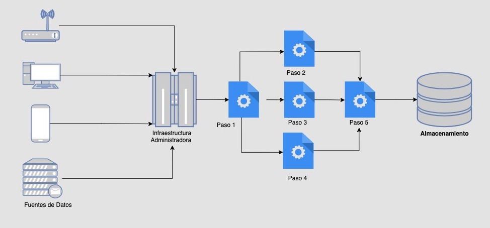

Canalización de datos con Elixir y Broadway
Programa del show
- ¿Qué es un Data Pipeline?
- ¿Qué problemas resuelve?
- Nuestro ejemplo
- Solución utilizando PubSub
- Preguntas
¿Qué es un Data Pipeline?
Es un proceso conformado por una serie de pasos, en el que cada etapa del proceso recibe datos, que transformará y dará como entrada a la siguiente etapa. Una ves terminado el proceso, los datos resultantes serán entregados a un "destino", ya sea una forma de almacenamiento temporal o permanente.
Arquitectura Base
¿Qué problemas resuelve un Data Pipeline?
- Presentación y uso de datos de fuentes diversas
- Los datos carecen de estructura o la misma no está estandarizado
- Se requieren transformaciones costosas y la integridad de los datos no puede estar en riesgo
Supongamos que tenemos 3 juegos.
Cada juego es independiente con su propio set de datos
Hay un tablero de líderes compartido entre los juegos
Cada juego se desarrolló por equipos independientes
El backend del primer juego utilizaron MySQL hospedado en un host virtual
El segundo juego está usando un backend con MongoDB Atlas hospedado en AWS
El tercer juego No guarda datos en una BD externa, solo en el dispositivo
Infraestructura
Presentando PubSub
GCP PubSub
https://console.google.com

Bonus

Ahora sí, hagamos algo de Elixir
Pero antes, veamos que vamos a hacer
Creamos una aplicación nueva
con el supervisor habilitado
> mix new piper-pipe --supEsto nos arrojará direcciones para continuar
* creating README.md
* creating .formatter.exs
* creating .gitignore
* creating mix.exs
* creating lib
* creating lib/piper_pipe.ex
* creating lib/piper_pipe/application.ex
* creating test
* creating test/test_helper.exs
* creating test/piper_pipe_test.exs
Your Mix project was created successfully.
You can use "mix" to compile it, test it, and more:
cd piper_pipe
mix test
Run "mix help" for more commands.
El archivo mix necesitará las dependencias
# mix.exs
defmodule PiperPipe.MixProject do
use Mix.Project
...
def application do
[
mod: {PiperPipe, []},
extra_applications: [
:ecto,
:exq,
:inets,
:logger,
:myxql,
:postgrex
]
]
end
defp deps do
[
{:broadway_cloud_pub_sub, "~> 0.6.0"},
{:ecto_sql, "~> 3.0"},
{:exq, "~> 0.14.0"},
{:goth, "~> 1.0"},
{:jason, "~> 1.1"},
{:myxql, ">= 0.0.0",
{:postgrex, ">= 0.0.0"}
]
end
end
Agreguemos los modelos en dónde
normalizaremos los datos
> mix ecto.gen.repo -r PiperPipe.RepoEl resultado del comando nos dará dirección de que sigue...
* creating lib/piper_pipe/boards
* creating lib/piper_pipe/repo.ex
* creating config/config.exs
Don't forget to add your new repo to your supervision tree
(typically in lib/piper_pipe/application.ex):
{PiperPipe.Repo, []}
And to add it to the list of Ecto repositories in your
configuration files (so Ecto tasks work as expected):
config :piper_pipe,
ecto_repos: [PiperPipe.Repo]
La configuración general del proyecto
# config/config.exs
import Config
config :piper_pipe,
ecto_repos: [PiperPipe.Repo, AmoungUs.Repo]
config :piper_pipe, PiperPipe.Repo,
database: "piper_pipe_repo",
username: "username",
password: "password",
hostname: "localhost"
config :piper_pipe, AmongUs.Repo,
database: "among_us_users",
username: "username",
password: "password",
hostname: "localhost",
socket: "/tmp/mdb-mysql.sock"
config :goth,
json: System.get_env("GOOGLE_AUTH_JSON_FILE") |> File.read!()
config :piper_pipe, PiperPipe.Subscriber,
project_id: "playground-314500",
subscription: "leader-board-sub",
producer_module: BroadwayCloudPubSub.Producer
config :exq,
name: Exq,
host: "localhost",
namespace: nil,
database: 0,
port: 6379,
concurrency: 100,
queues: ["piper_pipe"],
poll_timeout: 50,
scheduler_poll_timeout: 200,
scheduler_enable: true,
max_retries: 25,
mode: :default,
shutdown_timeout: 5000,
start_on_application: false
Agregaremos los hijos al arbol supervisor
# lib/piper_pipe/application.ex
defmodule PiperPipe.Application do
# See https://hexdocs.pm/elixir/Application.html
# for more information on OTP Applications
@moduledoc false
use Application
@impl true
def start(_type, _args) do
children = [
PiperPipe.Repo
AmongUs.Repo
PiperPipe.Subscriber,
%{
id: Exq,
start: {Exq, :start_link, []},
type: :supervisor
},
]
# See https://hexdocs.pm/elixir/Supervisor.html
# for other strategies and supported options
opts = [strategy: :one_for_one, name: PiperPipe.Supervisor]
Supervisor.start_link(children, opts)
end
end
El Supervisor
iex > :supervisor.start(){kind=link}
Configuremos la base de datos del pipeline
mix ecto.createGeneremos las migraciones requeridas
> mix ecto.gen.migration add_boards_users_table -r PiperPipe.Repo
> mix ecto.gen.migration add_boards_games_table -r PiperPipe.Repo
> mix ecto.gen.migration add_boards_leaders_table -r PiperPipe.Repo
A continuación configuramos nuestras 3 nuevas migraciones
# priv/repo/migrations/20210521184708_add_boards_users_table.exs
defmodule PiperPipe.Repo.Migrations.AddBoardsUsersTable do
use Ecto.Migration
def change do
create table("boards_users") do
add :username, :string, null: false
add :first_name, :string, null: false
add :last_name, :string, null: false
add :email, :string, null: false
timestamps()
end
create index("boards_users", :username)
create index("boards_users", :email)
end
end
# priv/repo/migrations/20210521184722_add_boards_game_table.exs
defmodule PiperPipe.Repo.Migrations.AddBoardsGameTable do
use Ecto.Migration
def change do
create table("boards_games") do
add :name, :string, null: false
timestamps()
end
end
end
# priv/repo/migrations/20210521191708_add_boards_leaders_table.exs
defmodule PiperPipe.Repo.Migrations.AddBoardsLeadersTable do
use Ecto.Migration
def change do
create table("boards_leaders") do
add :score, :integer, null: false
add :game_id, references(:boards_games), null: false
add :user_id, references(:boards_users), null: false
timestamps()
end
create index("boards_leaders", :game_id)
create index("boards_leaders", :user_id)
end
end
Agregamos un esquema por cada tabla
defmodule PiperPipe.Boards.User do
use Ecto.Schema
schema "boards_users" do
field :username
field :name
field :surname
field :email
timestamps()
end
end
Los esquemas estan organizados dentro de un contexto: boards
defmodule PiperPipe.Boards.Game do
use Ecto.Schema
schema "boards_leaders" do
field :name
timestamps()
end
end
El contexto nos permitirá mantener el dominio de los esquemas claro
defmodule PiperPipe.Boards.Leader do
use Ecto.Schema
schema "boards_leaders" do
field :score
belongs_to :game, Game
belongs_to :user, User
timestamps()
end
end
Ahora ejecutamos las migraciones para guardar la estructura en la base de datos
mix ecto.migrateEs hora del Show
Lo primero es crear un subscriptor
# lib/piper_pipe/subscriber.ex
defmodule PiperPipe.Subscriber do
use Broadway
alias PiperPipe.Processor
alias PiperPipe.Subscriber
def start_link(_opts) do
Broadway.start_link(__MODULE__,
name: __MODULE__,
producer: [
module: producer_opts()
],
processors: [
default: [concurrency: 2]
],
batchers: [
default: [batch_size: 10]
]
)
end
@doc """
This is the callback for a single message. The message received have this form
%Broadway.Message{
acknowledger: {BroadwayCloudPubSub.ClientAcknowledger,
#Reference<0.3247436956.2116288513.216948>,
%{
ack_id: "base64 encoded ack id"
}},
batch_key: :default,
batch_mode: :bulk,
batcher: :default,
data: ENCODED_DATA_JSON_STR,
metadata: %{}
status: :ok
}
The payload is a Map with the keys as:
```
%{
"version" => 1, # Integer
"user_id" => user_id, # Integer
"game_name" => game_name, # String
"score" => score # Integer
}
```
"""
def handle_message(_processor_name, message, _context) do
message
|> Map.get(:data)
|> decode_data
|> Processor.process
message
end
def handle_batch(:default, messages, _batch_info, _context) do
messages
end
defp producer_opts do
config = fetch_config()
{
config[:producer_module],
subscription: project_subscription(config[:producer_module])
}
end
defp project_subscription(Broadway.DummyProducer), do: []
defp project_subscription(_) do
config = fetch_config()
"projects/#{config[:project_id]}/subscriptions/#{config[:subscription]}"
end
defp fetch_config, do: Application.get_env(:piper_pipe, Subscriber)
defp decode_data(message), do: Jason.decode!(message)
end
Con el subscriptor listo,
vamos a definir un procesador
# lib/piper_pipe/processor.ex
defmodule PiperPipe.Processor do
@default_queue "piper_pipe"
@type pubsub_msg :: %{
required(Integer.t) => Integer.t,
required(Integer.t) => Integer.t,
required(String.t) => String.t,
required(Integer.t) => Integer.t,
required(Integer.t) => Integer.t,
}
@spec process(pubsub_msg) :: :ok
def process(%{"version" => 1, "game_name" => game_name} = msg) do
Exq.enqueue(Exq, @default_queue, game_processor(game_name), [msg])
end
defp game_processor(name) do
game_module = Macro.camelize(name)
:"Elixir.PiperPipe.GameProcessor.#{game_module}"
end
end
Esta parte es la más importante
Exq.enqueue(Exq, @default_queue, game_processor(game_name), [msg])
- Nombre del proceso: Exq
- Nombre de la cola
- Modulo que hara el trabajo
- Lista de argumentos para el trabajo
¿Cómo se ve un trabajador?
# lib/piper_pie/game_processor/among_use.ex
defmodule PiperPipe.GameProcessor.AmongUs do
import Ecto.Query
import PiperPipe.GameProcessor.Common
alias PiperPipe.Boards.Game
alias PiperPipe.Repo
def perform(%{"user_id" => user_id,
"score" => score}) do
game_user = AmongUs.Repo.get(AmongUs.User, user_id)
game = fetch_game()
find_or_create_user(game_user.email, game_user)
|> insert_game(game, score)
end
defp fetch_game do
Repo.one(from g in Game, where: g.name == "Among Us")
end
end
Perfil del trabajador ideal
- Tiene una sola función pública llamada perform
- Recibe poca data como argumento, de preferencia, tipos simples
- Su trabajo no depende del estado de otros trabajos, porque puede ejecutarse en paralelo
- Su trabajo es transaccional y seguro. Si falla puede volver a ejecuarse sin efectos secundarios
Este trabajo en particular se conecta al Repo
llamado AmongUs
game_user = AmongUs.Repo.get(AmongUs.User, user_id)Tenemos trabajos que pueden ejecutarse en paralelo tomando data de otras fuentas de datos
# lib/piper_pipe/game_processor/fridays_night_funky.ex
defmodule PiperPipe.GameProcesor.FridaysNightFunky do
import Ecto.Query
import PiperPipe.GameProcessor.Common
alias FridaysNightFunky.Service
alias PiperPipe.Boards.Game
alias PiperPipe.Repo
def perform(%{"user_id" => user_id,
"score" => score}) do
game_user = Service.get(user_id)
game = fetch_game()
find_or_create_user(game_user.username, game_user)
|> insert_game(game, score)
end
defp fetch_game do
Repo.one(from g in Game, where: g.name == "Fridays Night Funky")
end
end
# lib/piper_pipe/game_processors/flappy_bird.ex
defmodule PiperPipe.GameProcessor.FlappyBird do
import Ecto.Query
import PiperPipe.GameProcessor.Common
alias PiperPipe.Boards.Game
def perform(%{"user_id" => user_id,
"score" => score}) do
game_user = FlappyBird.Service.get(user_id)
game = fetch_game()
find_or_create_user(game_user.username, game_user)
|> insert_game(game, score)
end
defp fetch_game do
PiperPipe.Repo.one(from g in Game, where: g.name == "Flappy Bird")
end
end
Iniciemos todo en consola
mix deps.get> iex -S mixSi todo esta bien, el app no dara niguna señal de vida,
hasta recibir un mensaje
Podemos verificar la cola de trabajos con el Api de Exq
iex > Exq.Api.stats Exq.Api, "processed"
{:ok, 0}
El mensaje
{
"version": 1,
"user_id": 1,
"game_name": "among_us",
"score": 1000
}
Utilizaremos el Sandbox de Google Console apra enviar un mensaje de prueba
Enviado el mensaje, regresamos a la sesión de IEX que tenemos abierta
El mensaje fue recibido y el proceso ejecutado
Ahora veremos que el número de trabajos
se ha incrementado
iex > Exq.Api.stats Exq.Api, "processed"
{:ok, 1}
Manejo de errores
Los errores pueden ocurrir en 2 etapas del proceso
- En el subscriptor de Broadway
- En el worker de Exq
Cuando ocurren en el subscriptor, el producer no enviará respuesta satisfactoria a GCP, el cual re-enviara el mensaje, dependiendo del algoritmo seleccionado al crear el tópico.
Cuando el error ocurre dentro de los procesos de Exq, los procesos serán reintentados, de igual forma.
GCP tiene herramientas para verificar el estado de los mensajes enviados
El mensaje solo se asegura que será enviado a 1 subscriptor
Asegurate de no obtener mensajes reales y marcarlos como recibidos para pruebas
genera subscriptores extras para evaluaciones y debugging
Exq tiene una interface gráfica para visualizar el estado de los procesos.
Todo el código aquí mostrado está en este repositorio
https://github.com/javierg/piper_pipe
Links
https://cloud.google.com/pubsub/docs
https://hexdocs.pm/broadway/Broadway.html
https://hexdocs.pm/exq/Exq.Api.html
https://blog.appsignal.com/2019/12/12/how-to-use-broadway-in-your-elixir-application.html